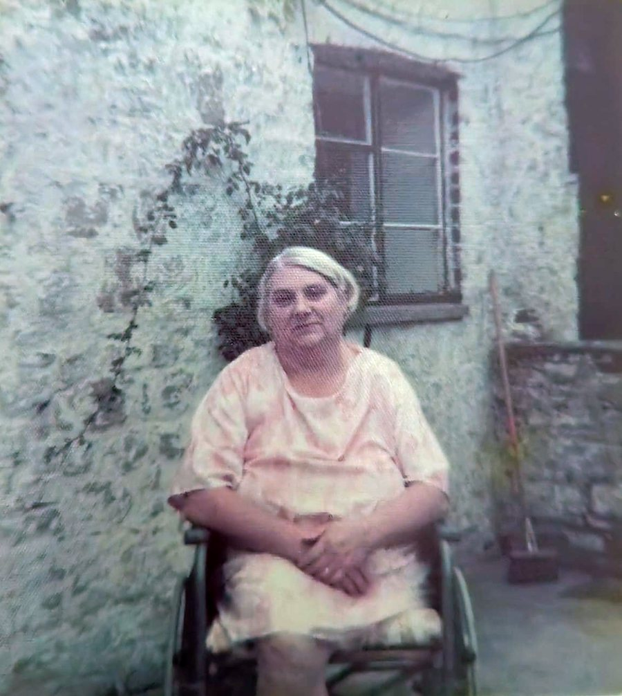

Llandough Community Council meetingThursday 22 October 2026, 19:00 (remote)
Tŷ Mawr · Great House Farm · Item 10
1The two agenda pointsItem 10: the burials, and community outreach
Item 10 on the Council's agenda of 13 October 2026: “To receive a request from Mr SB in relation to the following matters:”
The burials · item 10(b)
Whether the Council would consider, in due course, whether an interpretation board or a plaque near the green would be appropriate. The excavation on the land beneath Church View Close recorded 1,026 burials, described in the published report as by far the largest early medieval burial population so far recovered from Wales, above a Roman villa and an Iron Age roundhouse. That history belongs to Llandough as much as to my family, and there is nothing on the ground that records it. I would be glad to give the Council or the community a short talk on the documentary record, without charge, if that would be useful.
The Clerk's agenda, 13 October 2026, item 10(b), word for word.
Community outreach · item 10(a)
I am asking whether the Council would be willing to pass my details to any former member, former clerk or long-standing resident who might remember the village between the 1950s and the 1990s, leaving it entirely to them whether to contact me. I appreciate the Council may have data protection or administrative reasons for declining, and I would not press it
The Clerk's agenda, 13 October 2026, item 10(a), word for word.
The Council's website and noticeboards carry the published agenda.
2My statementThe read-aloud statement for the meeting
Thursday 22 October 2026, 7.00pm. About three minutes.
The statement
Chair, councillors, thank you for placing this on the agenda.
My grandmother was Mary Williams of Great House Farm, Tŷ Mawr, beside St Dochdwy's Church. Our family's case is that we lived in that house from 1667 until it was demolished at about four in the morning on 6 December 1988.
Item 10 describes a plaque and a mailing list. The subject is wider than that, so I will take it in short parts.
The house. Heneb's record says the manorial courts of Llandough and Leckwith sat at Great House. The Local Plan said its buildings should be retained. It was never fully recorded before it came down.
The ground. A published study reports 1,026 burials from the early medieval cemetery excavated there in 1994, the largest such population recovered in Wales. The monastery's exact site has never been established. Nothing on the ground marks any of it, and the Council's own village history does not mention Great House.
My grandmother. For decades she said the house was hers. She refused every tenancy offered for it. In February 1983, while she lived there, BP applied to register the farmhouse as its own title; she died that March. In 1987, while the appeal was running, that title was merged into the fields.
The courts. They decided who could stay. The family lost. They did not decide who owned the house. The house came down the morning after Cadw refused to list it, while our Strasbourg application was pending.
My truth. In my view, what happened in 1988 was at least an imperial, colonial act. Our ancestral land and home were turned into some 20 houses. To my family it feels as if our land has become something like a work camp. That is my truth, not a finding of any court.
The records. More than twenty bodies have been asked. Cadw's 1988 file is missing with no record of destruction. The Land Registry's list of 43 documents does not include the 1969 deed BP's title rests on. The Ministry of Justice has not yet answered our MP.
Our research has only started. Nothing yet meets the threshold to reopen the case, and we do not claim it does. That is why the records matter.
We ask for four things. Put our statement on the public record. Make Great House Farm a standing item, with a named councillor. Recommend to the Senedd that an independent inquiry be considered. And write in support of disclosure and preservation of the records. We also ask you to recognise what three generations of my family have been through. We are not seeking anyone's home at Church View Close.
Your mission is “Serving our community, preserving our identity”. Tŷ Mawr is part of that identity. Thank you.
Sixty-second version
Chair, councillors, thank you. My family lived at Great House Farm, Tŷ Mawr, beside St Dochdwy's Church, from 1667 until it was demolished at about 4am on 6 December 1988. The manorial courts sat in that house. A published study reports 1,026 early medieval burials from the ground beside it. In 1983 the farmhouse was registered to BP while my grandmother lived in it; the courts decided possession, not ownership. Your own village history mentions none of this. Our research has only started, and the records that would test it have not yet been produced. Tonight we ask four things: put our statement on the record, make Tŷ Mawr a standing item with a named councillor, recommend a Senedd inquiry, and write in support of disclosure. Your mission is preserving our identity. Tŷ Mawr is part of it. Thank you.
The four asks for tonight
- Receive our statement and pack, and minute them.
- Make Great House Farm / Tŷ Mawr a standing item, with a named councillor.
- Recommend to the Senedd that an independent inquiry be considered.
- Write to the bodies holding the records in support of disclosure and preservation.
Briefing cue card
BRIEFING CUE CARD (say the line, move on; expand only if asked)
C1 WHO WE ARE
SAY: We are the Williams–Buckler family of Tŷ Mawr, the Great House of Llandough. Our family lived there for 320 years.
IF ASKED “Weren't you tenants?” The 1939 tenancy plan, now held, depicts the eastern fields only, not the house. Mary refused the tenancies offered for the house.
AGAINST US: The heritage record says the Vaughans held Great House as the chief freehold farm from the mid-16th to the late 18th century. Both accounts can be true only if the Williamses held under them.
AGAINST US: A 1904 report says John Williams “succeeded his father in the tenancy of the farm in 1855” (wiki EV-0227): a tenancy, and of “Llandough Farm”, matched to Great House by inference.
AGAINST US: “Home Farm” appears in no other source, and the 1881 acreage may read 170, closer to the neighbouring Llandough Farm of the Rees family (wiki EV-0228).
C2 WHAT LIES THERE
SAY: The ground at Church View Close held one of the great early Christian cemeteries of Wales. Nothing marks it.
IF ASKED “Isn't this history already told?” The Council's own village history says 800 burials and does not mention Great House at all.
AGAINST US: Museum Wales traces the medieval spur and spearhead linked to the “armour” story to Church Farm, 1858, not to Great House.
AGAINST US: It has not been shown that the 1994 burials lay on the family's own parcel.
C3 MARY'S PARCEL
SAY: For decades Mary Williams said the house was hers. She was treated as a tenant, and in 1983 her home was registered to BP while she lived in it.
IF ASKED “The register is conclusive.” The register can be corrected for mistake, and a person in actual occupation in 1982 had protected rights.
AGAINST US: The 1916 tenancy described the farm as one holding, and later documents repeated that wording.
AGAINST US: HM Land Registry says there is no evidence of a mistake; its stage-two decision says the title is registered correctly. That decision is with the Independent Complaints Reviewer.
C4 THE COURTS
SAY: The family lost every round on who could stay. No court has ruled on who owned the house.
IF ASKED “The courts have decided this.” They decided possession. The family's title case on the house parcel has not been tried.
AGAINST US: The Court of Appeal found the 1974 letters made later occupation permissive, whether or not Mary accepted them.
AGAINST US: Strasbourg held the interference with William Buckler's home lawful and justified.
C5 THE DISPOSSESSION
SAY: In 1988 a Welsh family was removed from its home and the house demolished before dawn. It was reported as an eviction.
IF ASKED “Why has it taken so long?” Witnesses died, papers were lost and the trauma silenced the family. Key records surfaced only in 2026.
AGAINST US: Press, 1989: one charge was withdrawn as out of time; William Buckler pleaded guilty to the others.
C6 THE HERITAGE ERASED
SAY: A Welsh manor house beside an early Christian site was cleared, and the official record was left saying almost nothing.
IF ASKED “Missing records prove nothing.” Agreed, on their own. These are files public bodies had a duty to keep, and they should account for the gaps.
AGAINST US: GGAT disclosed its dual role in 1990, recommended recording and protection, and did not advise demolition.
AGAINST US: Cadw said in 1988 that the house was not of sufficient architectural merit to list.
C7 THE RECORDS WALL
SAY: More than twenty bodies have been asked for the records over eighteen months. What would settle the questions has not yet been produced.
IF ASKED “Isn't this a fishing expedition?” Every request names a specific record. The registers list them one by one.
AGAINST US: Several bodies have disclosed material: the Royal Commission, Museum Wales, Cadw's photographs and the Land Registry schedule.
AGAINST US: A missing record is not, on its own, proof of concealment.
C8 RIGHTS, IDENTITY, PUBLIC INTEREST
SAY: This is a matter of human rights, Welsh heritage and public interest, not one family's grievance.
IF ASKED “Why should a community council get involved?” Its own mission is preserving our identity. It is the community's voice to the Senedd and the Vale.
AGAINST US: Indigenous-rights language is the family's framing; it is not a legal category UK courts currently apply to Wales.
C9 WHAT WE ASK
SAY: Put it on the record. Make it a standing item. Recommend an independent inquiry. Support disclosure, and the family. We are not seeking anyone's home at Church View Close.
IF ASKED “What can a community council do?” Record it, write letters, recommend an inquiry, and keep it on the agenda. That is how this starts.
3Questions sent to the Council12 questions, sent to the Clerk on 21 October
Sent by email to the Clerk, 21 October 2026, 00:25 BST, for the meeting papers. Each one rests on a point already raised in correspondence; tap a question to see where.
-
What consideration was my first approach given before the reply of 20 November 2025?
Raised before: Clerk's reply, 20 Nov 2025, “RE: BP vs Buckler”: “unable to assist with the matter you raise”.
-
Does the Council hold any Tŷ Mawr records besides the minute books deposited in 2002 (my email of 14 June)?
Raised before: Email of 14 Jun 2026, “Re: Great House Farm”.
-
Which agenda items cover the “other matters” your email of 11 October said would be considered in October?
Raised before: Clerk, 11 Oct 2026, FOI reply (s.12): the other matters “will be considered at the October meeting of the council”.
-
Who decided the meeting would be remote only, and on what date?
Raised before: Email of 13 Oct; the Clerk's emails of 13 Oct (agenda offering the Council Chamber) and 16 Oct (“remotely only”).
-
When was the website agenda revised and republished?
Raised before: Email of 20 Oct, question 2: the website agenda carries the same 13 October date but reads “remotely only”.
-
Where are the published arrangements for multi-location meetings (s.47, LGE(W)A 2021)?
Raised before: Objection of 16 Oct, point 3; repeated 20 Oct.
-
Was a physical public venue considered?
Raised before: Objection of 16 Oct, points 1 and 4.
-
When will my internal review (13 October) and narrower request (20 October) be answered, and will the review apply the EIR?
Raised before: Clerk, 13 Oct: “a full response will be sent to you in due course”; emails of 13 Oct and 20 Oct.
-
Will my statement and briefing pack be received and minuted?
Raised before: Briefing site proposal 01 (sent 14 Oct); emails of 16 and 20 Oct.
-
If the remote-only decision stands, will its reasons be minuted?
Raised before: Objection of 16 Oct, last paragraph.
-
Which councillor is my point of contact?
Raised before: Email to the Chair, 21 Sep, passed to the Clerk 28 Sep; briefing site proposal 02.
-
How do I place the wider matters on a future agenda?
Raised before: Email of 20 Oct, part (c).
Sion Buckler
4Records requestsPublic requests on WhatDoTheyKnow
5Correspondence with the ClerkThe emails, open for all to read
The Clerk writes in an official capacity. Personal contact details are left out.
6The road to this meetingEvery request it took to get here
Every request, review and complaint it took to reach this meeting, body by body.